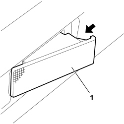
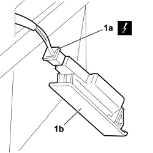

7040G46 <x>LOAD COMPARTMENT COURTESY LIGHT - R&R</x>
- Path
- Procedures > 70 FITTINGS > 7040 BODYSHELL INTERIOR TRIMS AND FITTINGS > 7040G VEHICLE COMPARTMENT LIGHTING SYSTEM > 7040G46 <x>LOAD COMPARTMENT COURTESY LIGHT - R&R</x>
- Kind
- repair procedure (removal / refitting; the operation number is the code)
- Applies to
- engines: 1.4 8v, 1.6 16v, 1.3 JTD 16V, 1.9 JTD 8V; all production periods
- Interactive page
- https://sloeber94.github.io/elrnDB-fDbl/en/#/223000197
Applies to: engines: 1.4 8v, 1.6 16v, 1.3 JTD 16V, 1.9 JTD 8V; production: da 12/03; only with equipment: MY 2005
 Removing
Removing
 Refitting
RefittingTurn the ignition key to the OFF position.
Lift the bonnet
Disconnect the negative battery terminal.
Description | Connector | |
|---|---|---|
- | BATTERY |
1. Working in the direction of the arrow, release the retainers and extract the courtesy light for the load carrying compartment. The courtesy light is a press-fit.

Applies to: engines: 1.4 8v, 1.6 16v, 1.3 JTD 16V, 1.9 JTD 8V; production: da 12/03; only with equipment: MY 2005
1. Disconnect the electrical connection (1a) and remove the courtesy light for the load carrying compartment (1b).
Description | Connector | |
|---|---|---|
1a | BOOT COURTESY LIGHT |

Applies to: engines: 1.4 8v, 1.6 16v, 1.3 JTD 16V, 1.9 JTD 8V; production: da 12/03; only with equipment: MY 2005
Refitting
RemovingCheck that the courtesy light for the load carrying compartment is not damaged.
Connect the electrical connection for the courtesy light for the load carrying compartment.
Description | Connector | |
|---|---|---|
- | BOOT COURTESY LIGHT |
Fit the courtesy light in its housing attaching the retainers.
Connect the negative battery terminal.
Description | Connector | |
|---|---|---|
- | BATTERY |
Check that the courtesy light for the load carrying compartment is working properly.